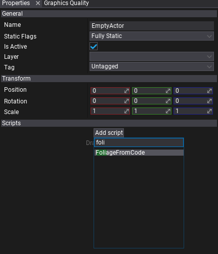
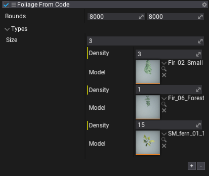
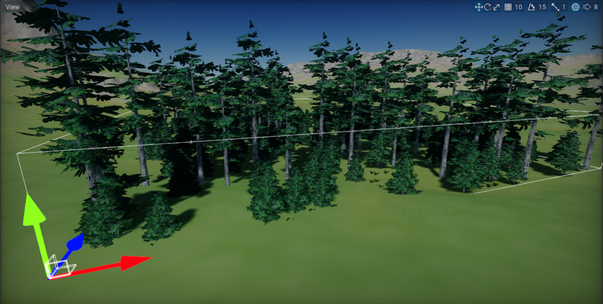

HOWTO: Create foliage from code
In this tutorial, you will learn how to create foliage from code at-runtime. This technique can be used to implement using foliage in games that generate the world at runtime (eg. RTS games).
1. Create new script
You can use this tutorial to learn how to do it.
2. Implement foliage generator
Write the following code to implement example foliage generator.
using System;
using System.ComponentModel;
using System.Threading.Tasks;
using FlaxEngine;
using FlaxEngine.Utilities;
public class FoliageFromCode : Script
{
private Foliage _foliage;
public struct FoliageType
{
[Tooltip("The foliage type mode asset.")]
public Model Model;
[DefaultValue(10.0f), Tooltip("The instances spawning density.")]
public float Density;
}
[Tooltip("The generated foliage instances bounds (in actor local-space).")]
public Vector2 Bounds = new Vector2(5000);
[Tooltip("The foliage types collection.")]
public FoliageType[] Types;
public override void OnStart()
{
// Create new dynamic foliage actor and add it to the scene
_foliage = new Foliage();
_foliage.HideFlags = HideFlags.DontSave;
_foliage.Name = "My Foliage";
_foliage.Parent = Actor;
// Generate foliage using the async task to prevent game stalls
// You can also use C# thread to perform this work
// Your game can display progress bar or loading screen while foliage is being generated
Task.Run(new Action(GenerateFoliage));
}
#if FLAX_EDITOR
public override void OnDebugDrawSelected()
{
// Draw bounds area in editor
var bounds = new BoundingBox(Vector3.Zero, new Vector3(Bounds.X, 1000.0f, Bounds.Y));
bounds = BoundingBox.Transform(bounds, Actor.LocalToWorldMatrix);
DebugDraw.DrawBox(bounds, Color.AliceBlue);
}
#endif
private void GenerateFoliage()
{
if (Types == null || Types.Length == 0)
{
Debug.LogError("No foliage types defined!");
return;
}
// Setup foliage types (do it before adding instances to improve performance)
for (int typeIndex = 0; typeIndex < Types.Length; typeIndex++)
{
var type = Types[typeIndex];
_foliage.AddFoliageType(type.Model);
}
// Spawn instances using random generation within the bounds
var boundsArea = Bounds.X * Bounds.Y;
var rand = new Random();
for (int typeIndex = 0; typeIndex < Types.Length; typeIndex++)
{
var type = Types[typeIndex];
var instancesCount = boundsArea * type.Density / (1000.0f * 1000.0f);
for (int i = 0; i < instancesCount; i++)
{
var instance = new Foliage.Instance();
instance.Type = typeIndex;
instance.Transform.Translation = new Vector3(rand.NextFloat() * Bounds.X, 0, rand.NextFloat() * Bounds.Y);
instance.Transform.Scale = new Vector3(rand.NextFloat(0.7f, 1.3f));
_foliage.AddInstance(ref instance);
}
}
// Ensure to update quad-tree after editing foliage
_foliage.RebuildClusters();
}
}
3. Add script to scene
Drag and drop the script to empty actor or use Properties window and Add script button.

4. Setup foliage types
Add foliage types descriptors by specifying foliage type model and spawn density.

5. Test it in Play Mode
Press Play button on the toolbar or hit F5 key and see the results. Foliage should quickly generate in a background. You can use it in your games that need to generate a foliage at runtime or in the editor.
